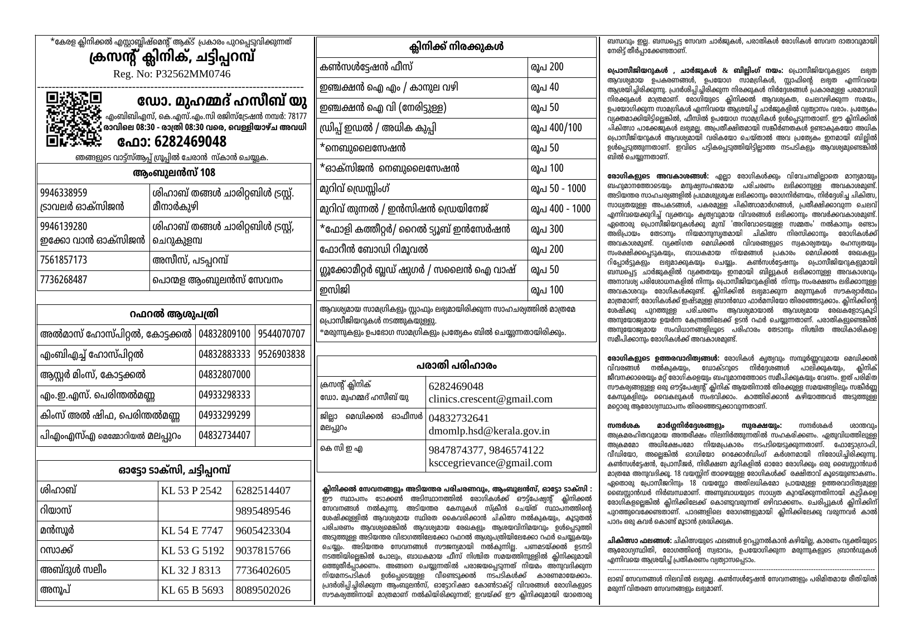

Timing
08:30 AM to 08:30 PM, Friday off
For Enquiry, Booking and Grievances
|
Location: Email: Phone/Whatsapp: For updates and information |

Certificates
- Age Certificate
- Food Handler’s Certificate
Dr. Muhammed Haseeb U, M.B.B.S , General Practitioner
Dr. Haseeb is a highly respected physician with over 5 years of clinical experience. A proud alumnus of AIIMS (All India Institute Of Medical Sciences, Patna), where he developed broad expertise in managing acute and chronic illnesses, in-patient care, medical emergencies, and critical care cases of varying age groups and gender. He has since built a reputation for medical excellence, compassion, and a patient-first approach. He has also served at Government Medical College, Wayanad. Currently, he serves as a physician with us, where he is known for combining in-depth medical knowledge with attentive, individualized care. Driven by a commitment to continuous learning and ethical practice, he remains actively engaged in the latest developments in medicine, ensuring that patients receive the most up-to-date and effective treatments available.
Events
Upcoming clinic updates and health awareness programs will appear here.